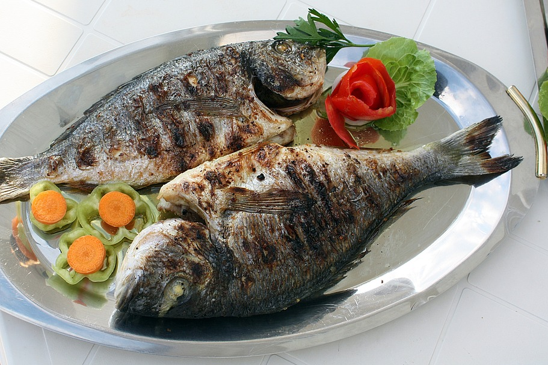

grilledfish

Ingredients
- fresh fish (tilapia, croaker, or mackerel)
- vegetable oil
- garlic
- ginger
- salt
- pepper
- onions
- lemon juice
- seasoning cubes
Steps
- Clean and wash the fish thoroughly, removing scales and guts.
- Pat dry and make diagonal cuts on both sides for even marination.
- In a bowl, mix oil, pepper, garlic, ginger, onions, seasoning, and lemon juice.
- Rub the marinade generously inside and outside the fish.
- Let it sit for 30 minutes to 1 hour to absorb the flavors.
- Preheat grill or oven to medium-high heat.
- Grill each side for 7–10 minutes until golden brown and cooked through.
- Brush with leftover marinade while grilling for extra flavor.
- Serve hot with fried plantain, salad, or chips.
This Nigerian-style grilled fish is spicy, smoky, and packed with flavor — perfect for a weekend hangout or dinner.
Best enjoyed hot with a cold drink or fresh salad!
homepage